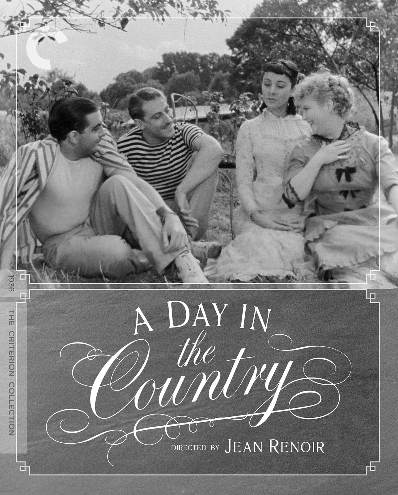
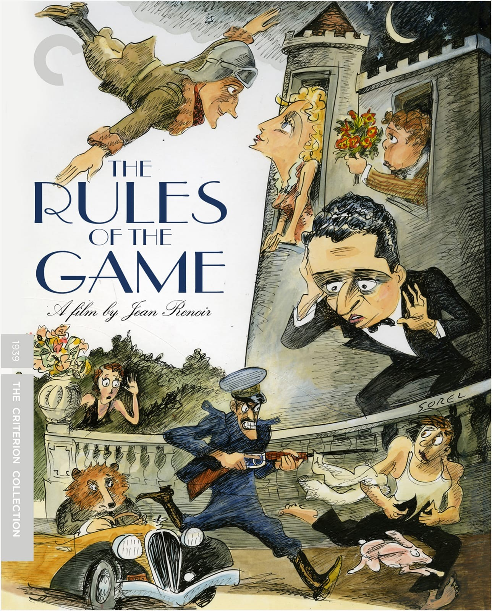
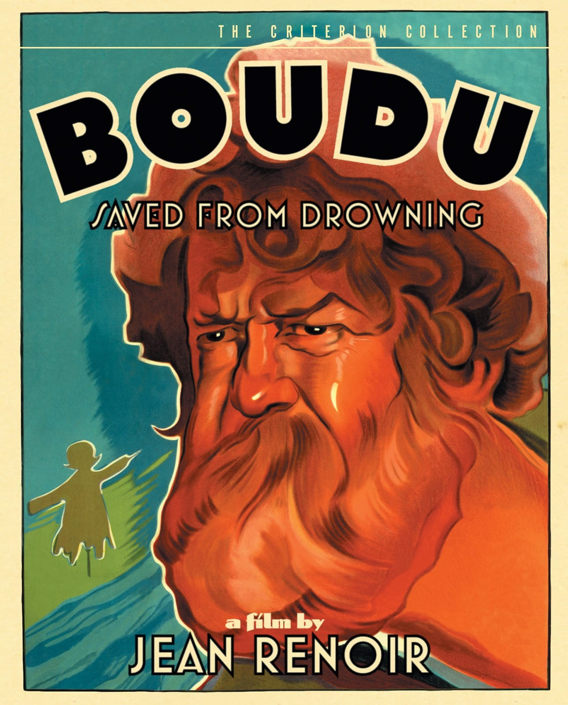

Jean Renoir (September 15, 1894 – February 12, 1979) was a French film director, screenwriter, actor, producer and author. As a film director and actor, he made more than forty films from the silent era to the end of the 1960s. His films are often cited by critics as among the greatest films ever made. He was ranked by the BFI's Sight & Sound poll of critics in 2002 as the fourth greatest director of all time. Among numerous honours accrued during his lifetime, he received a Lifetime Achievement Academy Award in 1975 for his contribution to the motion picture industry. Renoir was the son of the painter Pierre-Auguste Renoir. He was one of the first filmmakers to be known as an auteur.
My favorite Jean Renoir films
A day in the country (1936)
- The family of a Parisian shop-owner spends a day in the country. The daughter falls in love to a man at the inn, where they spend the day.
- Renoir never finished filming due to weather problems, but producer Pierre Braunberger turned the material into a release in 1946, ten years after it was shot.
- “A Day in the Country” is the most impressionistic of Renoir’s work: it’s a visual poem pitting the idyllic world of the country against the banalities of urban society, and while short, it’s in many ways the longest breath of fresh air in Renoir’s filmography.
Rules of the game (1939)
- At the onset of World War II, a weekend at a Marquis’ country château lays bare some ugly truths about a group of haut bourgeois acquaintances. The Rules of the Game is a scathing critique of corrupt French society, cloaked in a comedy of manners.
- At the time, The Rules of the Game was the most expensive French film made. Renoir's career in France was at its pinnacle in 1939, and The Rules of the Game was eagerly anticipated; however, its premiere was met with scorn and disapproval by both critics and audiences. Renoir reduced the film's running time from 113 minutes to 85, but even then the film was a critical and financial disaster.
- Since then, The Rules of the Game has been called one of the greatest films in the history of cinema. Numerous film critics and directors have praised it highly, citing it as an inspiration for their own work.
Boudu saved from drowning (1932)
- Bourgeois Parisian, Latin Quarter bookseller, Edouard Lestingois, rescues a tramp, Boudu, from a suicidal plunge into the River Seine, from the Pont des Arts. Boudu is brought into Lestingois' household. The family adopts the man and dedicates itself to reforming him into a proper middle class person. Boudu shows his gratitude by shaking the household to its foundation.
- Michel Simon gives one of the most memorable performances in screen history as Boudu.The writer Richard Boston has stated that, "Whether or not he was a pleasant man, he was certainly a complex one, with a good deal of Boudu in him."
- In 2005 a remake by the name "Boudu" was made starring Gerard Depardieu